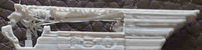
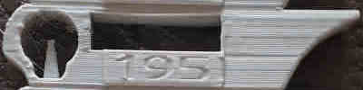
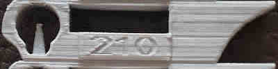
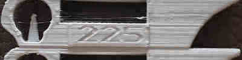
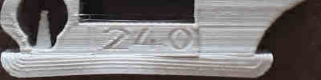

Calibration de la température du filament |
|
Vous devez avoir fait l'étalonnage du niveau du plateau avant cet étalonnage, et il est préférable d'avoir également fait l'étalonnage du débit. Cet étalonnage vous aidera à choisir la bonne température en fonction du collage, des surplombs et du suintement. Notez que ce test dépend du refroidissement que vous avez choisi. Vous pouvez l'imprimer plusieurs fois avec plus ou moins de refroidissement pour trouver le point idéal.
Ce test va imprimer une tour, imprimée avec un réglage de température différent pour chaque étage. L'étage du milieu sera imprimé avec la température actuelle sélectionnée dans votre configuration de filament. Le premier étage, qui touche la plaque de construction, sera donc imprimé avec la température la plus élevée et l'étage supérieur avec la température la plus basse. Vous pouvez choisir le delta de température entre chaque test et le nombre de tests (combien de tests en dessous de la température actuelle et combien de tests plus chauds que l'actuelle) mais vous pouvez aussi les laisser tels quels pour commencer.
L'objectif est de choisir la température la plus élevée possible qui ne produise pas d'artefacts.
D'abord, vous devez analyser la tour. Sur chaque étage, il est écrit "la température".
|  | trop froid, il ne peut pas être extrudé | |
|  | bon | |
|  | bon | |
|  | trop chaud, on peut voir un peu de suintement. | |
|  | trop chaud, on peut voir un peu de suintement. |
Vous pouvez voir ici que la base imprimée à 210 degrés Celsius est le plus chaud que nous puissions imprimer sans problème de désintégration (en ce qui concerne la chaleur ; la mauvaise qualité des photos est due à la vitesse élevée). De plus, j'ai réussi à casser (avec difficulté) un morceau du sol à 195 degrés à cause d'un manque d'adhérence des couches ; il a donc été imprimé à trop basse température. Je conseille de faire le même test.
Enfin, vous voulez déchirer la tour pour voir si les températures plus basses ont des effets négatifs sur la liaison des couches. Il ne devrait pas être possible de déchirer les couches à mains nues. Si un étage peut être facilement retardé, alors la température de cet étage est certainement trop basse (ou vous avez eu trop de refroidissement en raison du ventilateur qui souffle trop fort), vous devez donc choisir une température plus élevée ou réessayer avec moins de refroidissement. Lorsque vous essayez d'en briser un, ne mettez pas vos mains sur les extrémités de la tour, mais sur l'étage testé et le suivant, en ne laissant que les espaces entre les ponts.
Modifiez la température dans le réglage de votre filament (extrudeuse -> autres couches), puis enregistrez-la. La température de la première couche est souvent supérieure de 5 degrés pour faciliter l'adhésion du lit, vous devez donc également la modifier, surtout si elle est inférieure à la nouvelle température.
La plupart des calibrations doivent être effectuées dans l'ordre exacte. Celui-ci devrait être le troisième.
Les chiffres de la température ne seront affichés qu'entre 180 et 285. Les valeurs supérieures ou inférieures ne seront pas affichées mais le test sera effectué avec succès, il suffit de s'en souvenir..
Cette tour est réalisée avec le modèle 3D créé par gaaZolee avec la license CC BY-SA 3.0.